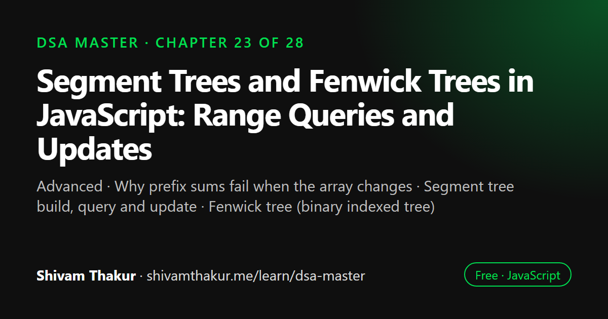

Chapter 23 of 28 · Advanced
Segment Trees and Fenwick Trees in JavaScript: Range Queries and Updates
Segment Trees and Fenwick Trees — Range Queries AND Updates, Together

Segment trees and Fenwick trees answer range queries, such as the sum or minimum of a subarray, while also allowing the array to change, with both operations in O(log n). This chapter builds a segment tree using the no, total and partial overlap cases, builds a compact Fenwick tree with the lowest-set-bit trick, and extends both to range updates.
In this chapter you will learn
- Why prefix sums fail when the array changes
- Segment tree build, query and update
- Fenwick tree (binary indexed tree)
- Lazy propagation
- Range update with range query
23.0 The Gap This Chapter Fills
Chapter 3 gave us prefix sums: O(n) setup, O(1) range-sum queries, but the array had to stay static — a single update anywhere would require rebuilding the whole prefix array. Chapter 3 also gave us difference arrays: O(1) range updates, but no way to answer a query about an intermediate state without a full O(n) reconstruction. What if you need both — many range queries AND many range updates, interleaved, on the same dynamically-changing array? Neither of Chapter 3's tools handles this. This chapter introduces two structures purpose-built for exactly this gap: the Segment Tree and the Fenwick Tree (Binary Indexed Tree).
23.1 The Segment Tree: A Tree That Answers Range Questions
Definition: A segment tree is a binary tree where each node represents a range (segment) of the original array, storing an aggregate value (sum, min, max, etc.) for that range; leaf nodes represent individual elements, and internal nodes represent the combination of their two children's ranges.
ASCII Visualization: A Segment Tree for Range Sums
Array: [1, 3, 5, 7, 9, 11]
[0-5]=36
/ \
[0-2]=9 [3-5]=27
/ \ / \
[0-1]=4 [2-2]=5 [3-4]=16 [5-5]=11
/ \ / \
[0-0]=1 [1-1]=3 [3-3]=7 [4-4]=9
Each internal node's value = sum of its two children.
Leaf nodes correspond directly to array elements.Direct Callback to Chapter 8's Tree Vocabulary and Chapter 9's Array Representation
This is worth stating explicitly: a segment tree is precisely Chapter 8's tree concept, but built specifically to represent hierarchical range decomposition, and (like Chapter 9's heap) is almost always implemented via a flat array using index arithmetic rather than pointer-based nodes, for the exact same cache-locality and simplicity reasons discussed in Chapter 9.
23.1.1 Building the Segment Tree (Array-Based, Chapter 9-Style Index Arithmetic)
class SegmentTree {
#tree;
#n;
constructor(arr) {
this.#n = arr.length;
this.#tree = new Array(4 * this.#n).fill(0); // 4n is a safe, standard upper bound on space needed
this.#build(arr, 0, 0, this.#n - 1);
}
#build(arr, node, start, end) {
if (start === end) {
this.#tree[node] = arr[start]; // leaf node — represents a single element
return;
}
const mid = Math.floor((start + end) / 2);
const leftChild = 2 * node + 1; // EXACTLY Chapter 9's heap index arithmetic!
const rightChild = 2 * node + 2;
this.#build(arr, leftChild, start, mid);
this.#build(arr, rightChild, mid + 1, end);
this.#tree[node] = this.#tree[leftChild] + this.#tree[rightChild]; // combine children
}
// Time: O(n) — every node is visited exactly once, same reasoning as any tree traversal (Chapter 8)23.1.2 Range Sum Query: O(log n)
query(queryStart, queryEnd) {
return this.#queryHelper(0, 0, this.#n - 1, queryStart, queryEnd);
}
#queryHelper(node, start, end, queryStart, queryEnd) {
if (queryEnd < start || end < queryStart) {
return 0; // COMPLETELY outside the query range — contributes nothing
}
if (queryStart <= start && end <= queryEnd) {
return this.#tree[node]; // COMPLETELY inside the query range — use the precomputed value directly!
}
// PARTIAL overlap — must recurse into both children and combine
const mid = Math.floor((start + end) / 2);
const leftSum = this.#queryHelper(2 * node + 1, start, mid, queryStart, queryEnd);
const rightSum = this.#queryHelper(2 * node + 2, mid + 1, end, queryStart, queryEnd);
return leftSum + rightSum;
}Dry Run: query(1, 4) on [1, 3, 5, 7, 9, 11]
Tree (from the visualization above):
[0-5]=36 -> [0-2]=9, [3-5]=27
[0-2]=9 -> [0-1]=4, [2-2]=5
[0-1]=4 -> [0-0]=1, [1-1]=3
[3-5]=27 -> [3-4]=16, [5-5]=11
[3-4]=16 -> [3-3]=7, [4-4]=9
queryHelper(node=[0-5], queryRange=[1,4]):
[0-5] partially overlaps [1,4] -> recurse both children
queryHelper([0-2], [1,4]):
[0-2] partially overlaps [1,4] -> recurse both children
queryHelper([0-1], [1,4]):
[0-1] partially overlaps [1,4] -> recurse both children
queryHelper([0-0], [1,4]): [0-0] is OUTSIDE [1,4] (end=0 < queryStart=1) -> return 0
queryHelper([1-1], [1,4]): [1-1] is FULLY INSIDE [1,4] -> return tree value = 3
Combine: 0 + 3 = 3
queryHelper([2-2], [1,4]): [2-2] is FULLY INSIDE [1,4] -> return tree value = 5
Combine: 3 + 5 = 8
queryHelper([3-5], [1,4]):
[3-5] partially overlaps [1,4] -> recurse both children
queryHelper([3-4], [1,4]): [3-4] is FULLY INSIDE [1,4] -> return tree value = 16
queryHelper([5-5], [1,4]): [5-5] is OUTSIDE [1,4] (start=5 > queryEnd=4) -> return 0
Combine: 16 + 0 = 16
Final: 8 + 16 = 24
Verify: arr[1..4] = [3,5,7,9], sum = 3+5+7+9 = 24 ✓23.1.3 Point Update: O(log n)
update(index, newValue) {
this.#updateHelper(0, 0, this.#n - 1, index, newValue);
}
#updateHelper(node, start, end, index, newValue) {
if (start === end) {
this.#tree[node] = newValue; // reached the leaf — apply the update
return;
}
const mid = Math.floor((start + end) / 2);
const leftChild = 2 * node + 1;
const rightChild = 2 * node + 2;
if (index <= mid) {
this.#updateHelper(leftChild, start, mid, index, newValue);
} else {
this.#updateHelper(rightChild, mid + 1, end, index, newValue);
}
this.#tree[node] = this.#tree[leftChild] + this.#tree[rightChild]; // recompute this node from its (now-updated) children
}
}23.2 The Fenwick Tree (Binary Indexed Tree): A Cleverer, More Compact Alternative
23.2.1 The Core Insight: Every Index "Owns" a Specific Range, Determined by Its Lowest Set Bit
Definition: In a Fenwick Tree, index i (1-indexed) is responsible for storing the sum of a range of length equal to i's lowest set bit (the rightmost 1 bit in its binary representation), ending exactly at index i.
Dry Run: Building and Querying a Fenwick Tree
Starting array (0-indexed, conceptually): [3, 2, -1, 6, 5, 4, -3, 3]
Fenwick tree size = 8, tree array initialized to all 0s (indices 0-8)
update(1, 3): // add 3 at position 1 (1-indexed)
i=1: tree[1] += 3 -> tree[1]=3. i += 1&(-1)=1 -> i=2
i=2: tree[2] += 3 -> tree[2]=3. i += 2&(-2)=2 -> i=4
i=4: tree[4] += 3 -> tree[4]=3. i += 4&(-4)=4 -> i=8
i=8: tree[8] += 3 -> tree[8]=3. i += 8&(-8)=8 -> i=16 > n=8, STOP
update(2, 2): // add 2 at position 2
i=2: tree[2] += 2 -> tree[2]=5. i -> i=4
i=4: tree[4] += 2 -> tree[4]=5. i -> i=8
i=8: tree[8] += 2 -> tree[8]=5. i -> 16, STOP
(... continuing for all 8 positions would fill out the tree completely ...)
prefixSum(4) after fully building (conceptually, sum of first 4 elements = 3+2-1+6 = 10):
i=4: sum += tree[4]. i -= 4&(-4)=4 -> i=0, STOP
Result depends on tree[4]'s final accumulated value after ALL updates — matches 10 when fully built.23.3 Range Update, Range Query: Extending Both Structures
23.4 Edge Cases and Gotchas Checklist
- Off-by-one between 0-indexed problem input and 1-indexed Fenwick Tree internals — always explicitly convert at the API boundary; this is the single most common Fenwick Tree bug.
- Empty array or size-0 structures. Verify constructors and queries handle this gracefully.
- Query range entirely outside the array's bounds. Verify both structures return a sensible result (typically
0for sum-based queries) rather than crashing. updatesemantics: "set to a new value" vs. "add a delta" — Segment Tree'supdate(section 23.1.3) sets an absolute new value; Fenwick Tree'supdate(section 23.2.1) adds a delta. Confusing these two conventions is a common, easy-to-miss source of bugs when switching between the two structures; always verify which semantic a specific implementation uses.- Non-invertible operations (min/max) with Fenwick Trees — the
prefixSum(right) - prefixSum(left-1)range-query trick relies on the operation being invertible (subtraction undoes addition); this does NOT work for min/max, which have no inverse operation — use a segment tree for range min/max instead. - 4n array sizing for segment trees — using an under-sized array (e.g.,
2ninstead of4n) can cause out-of-bounds errors for certain tree shapes; always use the standard4nsafe bound unless you've specifically verified a tighter bound for your exact tree-construction approach.
23.5 Chapter Summary
This chapter filled a genuine gap left open since Chapter 3: structures that support both efficient range queries and efficient updates simultaneously, on a dynamically changing array — something neither prefix sums (queries only, static array) nor difference arrays (updates only, no efficient intermediate queries) could offer alone. We built the segment tree as a direct application of Chapter 8's tree vocabulary combined with Chapter 9's array-based index arithmetic (2i+1, 2i+2, the identical formulas from heaps), where every query and update operation is governed by a memorable three-case decision (no overlap, total overlap, partial overlap) and bounded to O(log n) by the tree's unconditional, construction-guaranteed height — the same degeneration-proof guarantee Chapter 9's heap enjoyed over Chapter 8's plain BST.
We then introduced the Fenwick Tree (Binary Indexed Tree) as a more compact, more elegant alternative specifically for sum-like range queries, built on the genuinely clever i & (-i) bit trick (isolating an index's lowest set bit) that determines exactly which range each array position is "responsible for" — a preview of Chapter 24's bit manipulation techniques, and a structure requiring the important, easy-to-miss 1-indexing convention (unlike almost everything else in this book), since the bit trick's correctness specifically depends on index 0's all-zero binary representation being excluded from the traversal. We built a precise, honest comparison table: segment trees generalize to any associative operation (min, max, GCD, sum) and support range updates via the more advanced lazy propagation technique, while Fenwick Trees offer less code and less memory but are naturally restricted to invertible operations (sum, and similar), where the prefixSum(right) - prefixSum(left-1) trick actually works.
Finally, we delivered a genuinely satisfying synthesis: applying Chapter 3's difference array trick — "add at the start, subtract at end+1" — not to a plain array, but to a Fenwick Tree itself, upgrading Chapter 3's O(1)-update-but-O(n)-reconstruction technique into a structure offering O(log n) range updates and O(log n) point/prefix queries simultaneously — the exact capability gap this chapter opened by identifying, now closed by recognizing that an earlier, simpler technique's core idea can be elevated by re-implementing it atop a more powerful underlying structure, a genuinely valuable and repeatable problem-solving move worth carrying forward.
23.6 Revision Notes
- Segment trees and Fenwick trees fill the gap Chapter 3 left open: efficient range queries AND range updates together, on a dynamically changing array.
- Segment trees use Chapter 8's tree concept with Chapter 9's array-index arithmetic (2i+1, 2i+2); every operation follows the "no overlap / total overlap / partial overlap" three-case decision, bounded to O(log n) by unconditional tree height.
- Fenwick Trees use the
i & (-i)bit trick (isolating the lowest set bit) to determine each index's responsible range — a preview of Chapter 24's bit manipulation. - Fenwick Trees require 1-indexing — a hard requirement, not a stylistic choice, since the bit trick depends on excluding index 0's all-zero representation.
- Segment trees generalize to any associative operation (sum, min, max, GCD) and support range updates via lazy propagation (advanced, conceptual coverage); Fenwick Trees are more compact but restricted to invertible operations like sum.
- Applying Chapter 3's difference-array trick atop a Fenwick Tree (instead of a plain array) upgrades O(1)-update/O(n)-query into O(log n) for both — a genuine synthesis worth recognizing as a repeatable pattern.
23.7 Mind Map (ASCII)
SEGMENT TREES & FENWICK TREES
|
+------------------+-------+-------+------------------------+
| | | |
THE GAP FROM SEGMENT TREE FENWICK TREE SYNTHESIS:
CHAPTER 3 | (Binary Indexed Tree) RANGE UPDATE +
| Ch.8 tree + | RANGE QUERY
Prefix sums: Ch.9 array i & (-i) bit trick |
query-only, index math isolates LOWEST SET BIT Ch.3's difference
static array (2i+1,2i+2) (preview of Ch.24!) array trick
| | | ("add at start,
Difference arrays: 3-case query: 1-INDEXED required subtract at
update-only, no no overlap / (hard requirement, end+1"), applied
efficient total overlap / not style -- bit trick to a FENWICK TREE
intermediate partial overlap needs index 0 excluded) instead of a
query | | PLAIN ARRAY
| O(log n) query/ O(log n) update/ |
NEITHER supports update, O(n) prefixSum, O(n) space, = O(log n) RANGE
BOTH simultaneously build, O(4n) smaller constant UPDATE + O(log n)
space | POINT/PREFIX QUERY
| SEGMENT vs FENWICK: (the gap CLOSED!)
Lazy propagation general ops + range
(advanced, updates (seg. tree)
conceptual) for vs less code/memory,
range UPDATES sum-only (Fenwick)23.8 Cheat Sheet
SEGMENT TREE QUICK REFERENCE
===============================
Build: O(n) Query: O(log n) Update: O(log n) Space: O(4n)
Index math: left=2*node+1, right=2*node+2 (SAME as Chapter 9's heap!)
Query 3-case rule: no overlap -> 0; total overlap -> use precomputed value;
partial overlap -> recurse both children, combine
FENWICK TREE QUICK REFERENCE
================================
update(i, delta): for (i; i<=n; i += i&(-i)) tree[i] += delta
prefixSum(i): for (i; i>0; i -= i&(-i)) sum += tree[i]
rangeSum(l,r): prefixSum(r) - prefixSum(l-1)
MUST be 1-INDEXED. i & (-i) isolates the LOWEST SET BIT.
DECISION GUIDE
=================
Range SUM query + point update, want minimal code/memory -> Fenwick Tree
Range MIN/MAX/GCD query -> Segment Tree (Fenwick can't invert these!)
Need RANGE updates (not just point) + range queries -> Segment Tree + lazy propagation
(or Fenwick + difference-array trick, sum only)
SYNTHESIS: RANGE UPDATE + RANGE QUERY VIA FENWICK
=====================================================
rangeUpdate(l, r, delta): fenwick.update(l, delta); fenwick.update(r+1, -delta)
[Chapter 3's difference array trick, atop a Fenwick Tree!]
pointQuery(i): fenwick.prefixSum(i)23.9 Key Takeaways
- Segment trees and Fenwick trees close the gap Chapter 3 left open: efficient range queries AND updates together on a changing array.
- Segment trees reuse Chapter 8's tree concept and Chapter 9's array-index arithmetic; every operation follows a memorable three-case (no/total/partial overlap) decision, O(log n) via unconditional tree height.
- Fenwick Trees use the
i & (-i)lowest-set-bit trick (a Chapter 24 preview) and require 1-indexing as a hard correctness requirement, not a style choice. - Segment trees generalize to any associative operation and support range updates via lazy propagation; Fenwick Trees are more compact but restricted to invertible operations like sum.
- Applying Chapter 3's difference-array trick atop a Fenwick Tree (rather than a plain array) is a genuine synthesis unlocking O(log n) range updates and queries together.
23.10 20 Multiple Choice Questions
Tap an answer to check it. Your score updates as you go.
Score: 0 / 0 answered (20 questions)
What capability gap do segment trees and Fenwick trees fill, left open since Chapter 3?
What earlier chapters' concepts does a segment tree directly combine?
What is the three-case decision made at every segment tree query node?
What is the time complexity of a segment tree range query?
What is the standard safe array size bound used for a segment tree's underlying array?
What bit-manipulation trick powers the Fenwick Tree's operations?
Why must a Fenwick Tree be 1-indexed rather than 0-indexed?
What is the time complexity of a Fenwick Tree's update and prefixSum operations?
What is a key space advantage of Fenwick Trees over segment trees?
What types of operations can segment trees support that Fenwick Trees generally cannot?
Why can't the standard Fenwick Tree range-query trick (prefixSum(r) - prefixSum(l-1)) work for min/max queries?
What advanced technique allows segment trees to support efficient RANGE updates (not just point updates)?
What earlier chapter's technique is combined with a Fenwick Tree to achieve both range updates AND range queries?
What is the resulting complexity of range updates and point/prefix queries when combining a difference array with a Fenwick Tree?
What does the Segment Tree's
updateoperation typically do, compared to the Fenwick Tree'supdate?What is the index arithmetic used for segment tree children, and what chapter does it directly echo?
What guarantees a segment tree's O(log n) operation complexity, similar to a heap's guarantee?
What must you verify at the API boundary when using a Fenwick Tree in a problem with 0-indexed array input?
When would you choose a segment tree over a Fenwick Tree, according to this chapter's decision framework?
When would you choose a Fenwick Tree over a segment tree?
Show the answer key
1-b, 2-b, 3-b, 4-b, 5-c, 6-b, 7-b, 8-b, 9-a, 10-b, 11-b, 12-b, 13-b, 14-b, 15-b, 16-b, 17-b, 18-b, 19-b, 20-b
23.11 20 Coding Problems
Easy
- Implement
SegmentTree'sbuildandqueryfrom memory (section 23.1), and verify against the book's dry run. - Implement
SegmentTree'supdatefrom memory (section 23.1.3). - Implement
FenwickTree'supdateandprefixSumfrom memory (section 23.2.1), and verify the 1-indexing convention explicitly in a test. - Write a function to convert a 0-indexed array-based problem into correct calls against a 1-indexed Fenwick Tree, handling the index conversion explicitly.
- Given a small array, build both a segment tree and a Fenwick tree for range-sum queries, and verify they produce identical query results across several test ranges.
Medium
- Extend
SegmentTreeto support range MINIMUM queries instead of range sum (change the combine operation from+toMath.min), and verify it correctly handles a case where a Fenwick-tree-based approach would fail (min is non-invertible). - Implement
RangeUpdateFenwickTreefrom memory (section 23.3), verifying bothrangeUpdateandpointQuerywork correctly together. - Given an array representing daily stock prices, use a segment tree to efficiently answer "what was the maximum price between day A and day B" for many queries, with occasional price corrections (updates).
- Implement a segment tree supporting range GCD queries (combine operation: greatest common divisor of the two children).
- Given a large array of numbers with frequent point updates and range-sum queries interleaved, benchmark a Fenwick-tree-based solution against a naive O(n)-per-query recomputation approach.
Hard
- Implement lazy propagation for a segment tree, supporting efficient RANGE updates (add a delta to every element in a range) alongside range-sum queries, both in O(log n).
- Given a large dataset of e-commerce order counts per hour, use a Fenwick Tree to efficiently answer "how many total orders occurred between hour A and hour B" with frequent updates as new orders arrive.
- Implement a 2D Fenwick Tree (Binary Indexed Tree) supporting point updates and rectangular range-sum queries on a matrix, extending the 1D bit-trick logic to two dimensions.
- Given a competitive programming "inversion count" problem (count pairs i<j where arr[i]>arr[j]), use a Fenwick Tree to solve it efficiently in O(n log n), rather than the naive O(n²) approach.
- Implement a segment tree that supports both range-sum queries AND finding the k-th smallest element efficiently (a "merge sort tree" or "segment tree with sorted vectors" variant), discussing the added complexity in comments.
Interview Level
- (Google-level) Given a real-time analytics dashboard requiring range-sum queries over time-series data with frequent updates (new data points arriving continuously), design and implement a Fenwick-Tree-based solution, discussing the trade-offs versus recomputing from scratch.
- (Amazon-level) Given a warehouse inventory system needing efficient range-sum queries (total inventory across a range of SKU IDs) with frequent stock-level updates, implement a Fenwick Tree solution and discuss why it beats a naive prefix-sum-array approach (Chapter 3) for this dynamically-changing use case.
- (Microsoft-level) Given a document editing system needing to track "character count per paragraph range" with frequent insertions/deletions (updates) and range queries (e.g., "total characters in paragraphs 5 through 10"), design a segment-tree-based solution.
- (Meta-level) Given a social media engagement tracker needing "total likes in the last N posts" with frequent new posts (updates) and range queries, implement a Fenwick Tree solution, and discuss the trade-off versus a simpler sliding-window approach (Chapter 3) if updates were less frequent.
- (Netflix-level) Design a video streaming analytics system tracking "total watch-time across a range of content IDs" with frequent updates as viewers watch content, using a segment tree or Fenwick Tree (justify your choice), and discuss how you'd extend it to support range MAXIMUM queries (e.g., "most-watched content ID in this range") if that requirement were added later.
23.12 5 Interview Questions
- "Implement a segment tree supporting range-sum queries and point updates, both in O(log n)." (Tests full implementation and the three-case query logic.)
- "Why does a Fenwick Tree need to be 1-indexed?" (Tests understanding of the bit-trick's dependency on excluding index 0.)
- "When would you choose a Fenwick Tree over a segment tree, or vice versa?" (Tests the decisive comparison framework — operation type and update requirements.)
- "How would you support efficient RANGE updates (not just point updates) on a Fenwick Tree or segment tree?" (Tests knowledge of the difference-array-plus-Fenwick synthesis, or lazy propagation conceptually.)
- "Why can't you use the standard Fenwick Tree range-query trick for range minimum queries?" (Tests understanding of the invertibility requirement.)
23.13 3 Real Projects
- Complete Range Query Library: Implement
SegmentTree(sum, min, and max variants) andFenwickTree(including the range-update extension) in a single library, with a self-check script verifying all variants against a naive O(n)-per-query baseline across randomized test sequences of interleaved updates and queries. - Real-Time Analytics Dashboard Simulator: Build a Node.js tool simulating a time-series analytics dashboard (e.g., hourly order counts) using a Fenwick Tree, supporting live updates and range-sum queries, benchmarked against a naive recomputation-from-scratch approach to empirically demonstrate the O(log n) advantage.
- Inversion Counter: Build the Fenwick-Tree-based inversion count solution (coding problem #14) as a standalone tool, benchmarked against the naive O(n²) approach at increasing array sizes, to empirically demonstrate the dramatic complexity improvement.
23.14 Further Reading
- Peter Fenwick's original 1994 paper introducing the Binary Indexed Tree structure that bears his name.
- Search "segment tree lazy propagation tutorial" for a full, detailed treatment of the advanced range-update extension only conceptually introduced in section 23.3.
- Search "2D Fenwick Tree" and "2D Segment Tree" for extensions to matrix-shaped data, directly relevant to coding problem #13.
- Competitive Programmer's Handbook (Antti Laaksonen) or similar competitive programming references, for extensive additional segment tree and Fenwick tree problem sets and variants.
Segment Tree & Fenwick Tree (BIT) in JavaScript: frequently asked questions
When should I use a segment tree?
Use a segment tree when you need many range queries (sum, minimum, maximum, GCD) on an array that is also being updated. Both queries and updates take O(log n), whereas a prefix sum array needs O(n) to rebuild after each update.
What is the difference between a segment tree and a Fenwick tree?
A Fenwick tree is shorter to code and uses less memory, but it only supports operations that can be undone, such as sums. A segment tree supports any associative operation, including min and max, and range updates with lazy propagation.
Why is a Fenwick tree 1-indexed?
Fenwick trees move between indexes with i & (-i), the lowest set bit. At index 0 that value is 0, so the loop would never advance; starting at 1 is required for correctness.
What is lazy propagation?
Lazy propagation postpones a range update by storing it at the highest segment-tree nodes that fully cover the range, and pushes it down to children only when they are visited later. That keeps range updates at O(log n).